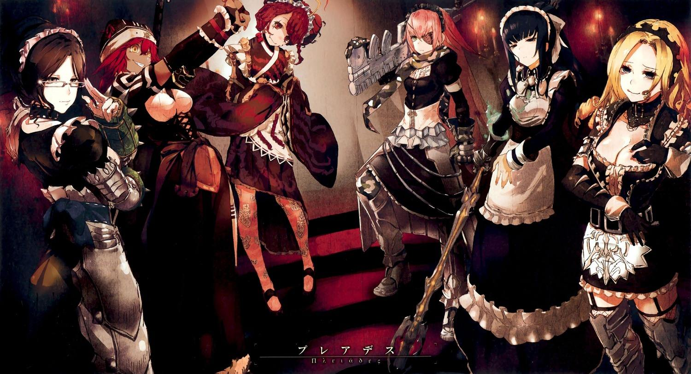
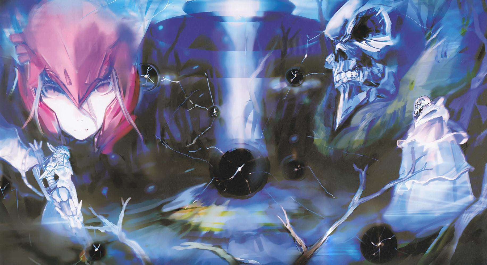

制作者：佩罗罗奇诺 种族：真祖 等级：100（种族等级20+职业等级80） 属性：邪恶~极恶（正义值-450） “纳萨力克地下大坟墓”第一至三阶层守护者。 吸血鬼真祖，原本在“YGGDRASIL”中吸血鬼是口腔长满针状牙齿、状似长有四肢的吸血水蛭般的异型怪物，但由于创作者高超的绘图能力而拥有美少女的姿态，不过在陷入亢奋状态时仍会现出原型。 综合能力最强的守护者，以严谨的职业结构被创造出来，全身穿着传说级的装备，并持有能吸收对手伤害恢复体力的神器级武器－滴管长枪。不仅如此，作为信仰系魔法吟唱者拥有好几种可以用来对付不死者的魔法，也擅长肉搏战，就能力而言可说是安兹的天敌。 讲话时的语调老成且习惯带着尾语“ありんす”，虽然平时看来有着与外表年龄14岁不符的傲人上围，但其实是用东西垫出来的。由于对骨骸的异常癖好而迷恋安兹，与雅儿贝德是争夺纳萨力克支配者正宫之位的情敌，和亚乌菈则是一见面就拌嘴的关系，但其实并不讨厌彼此。

制作者：乌尔贝特·亚连·欧德尔 种族：最高阶恶魔 等级：100（种族等级35+职业等级65） 属性：极恶（正义值-500） “纳萨力克地下大坟墓”第七阶层守护者。 守护者中的军师兼防卫外敌的NPC指挥官，具备统治咒语等各种特殊能力，拥有三段恶魔变身形态。在守护者里最具智慧，时常向安兹提出建言。对纳萨力克的同伴们很温柔，对外则是非常残忍无道并以此为乐。因彼此的创造者之间有隔阂而跟塞巴斯的关系不太好。 第六卷使用“亚达巴奥”的假名，率领下级恶魔仆从进攻王国首都，并配合莫莫演出了一场提升名声的戏，而他与莫莫这场神话级的决斗也更加提高了莫莫的声望。

制作者：塔其·米 种族：龙人 等级：100（种族等级25+职业等级75） 属性：极善（正义值300） “纳萨力克地下大坟墓”管家。 “昴宿星团”的前任队长，平时负责守卫王座之厅以及管理第九和第十阶层的日常事务。在纳萨力克四名最擅长肉搏战的NPC中其徒手格斗能力强于科塞特斯和雅儿贝德。平时是一位女性回头率100%的帅气老绅士，受到制作人塔其·米的影响，正义感很强，非常热心帮助有困难的人。与迪米乌哥斯的关系不太融洽。 第五卷中从王国地下势力“八指”救出差点被虐待致死的琪雅蕾，第六卷里请求安兹收容琪雅蕾加入纳萨力克， 之后轻松歼灭了“八指”最强战力“六臂”。
安兹·乌尔·恭（アインズ·ウール·ゴウン） 种族：死之统治者（Over Lord） 等级：100（种族等级40+职业等级60） 属性：极恶（正义值-500） 本作主角，原名“飞鼠”，“安兹·乌尔·恭”公会长，“纳萨力克地下大坟墓”统治者。 真实姓名为“铃木悟”，是一名忙碌的业务员，父母双亡，没有朋友，在现实世界里过着孤独的生活，因此特别珍视在YGGDRASIL中与公会成员间的友情，即使在成员逐一离开游戏后依然维持着公会等待他们归来。 角色构成为极限特化死灵系类型，魔力量高达1980（普通满级玩家大概在1300左右），能够使用的魔法有718种（一般百级玩家通常只能使用300种）。只论没有玩家技能加持的战斗力在全部玩家里属于中上水准，若考虑全身的神器级装备和付费道具的话可以达到上中等级。十分擅长分析情报，与玩家PK的胜率很高，不过都是放弃第一次胜负后的连胜。结合氪金道具的话可以单挑两个同等级玩家。 穿越到异世界后，飞鼠为了寻找伙伴而将自己名字改为昔日的公会名称“安兹·乌尔·恭”，并以冒险者“飞飞”的身份收集情报。第九卷以耶·兰提尔为根据地建立了“安兹·乌尔·恭魔导国”。

制作者：翠玉录 种族：小恶魔 等级：100（种族等级30+职业等级70） 属性：极恶（正义值-500） 注：文库版新增角色，web版无此角色。 “纳萨力克地下大坟墓”守护者总管。 总是面带温柔微笑的绝世美人，除军事方面外拥有管理纳萨力克全般事务的完美才能，平时担任安兹的辅佐者，在主人外出时会以代理人的身份管理大坟墓。 性格原本被设定成“荡妇”（Bitch），但飞鼠在游戏关闭运营的最后时刻抱着“稍微行使一下不曾行使过的会长权力”的心情更改为“爱着飞鼠”，结果在穿越后对主角抱持着浓烈且略显异常的爱意，并因此作出许多令安兹及同伴为之哑然的奇行。 因为翠玉录的私下赐予而持有世界级道具－地狱深渊（最强对物体破坏力，对活物效果差），全身装备神器级铠甲－赫尔梅斯·特利斯·美吉斯特斯（三层式装甲）。由于设定的更改而变得无法骑乘只有不洁少女才能乘坐的召唤骑兽。纳萨力克四名最擅长肉搏战的NPC之一，最强之盾。 对抛弃了纳萨力克的无上至尊们怀有不满，心中只认可安兹（飞鼠）为主人。小说第七卷向安兹提出了组建搜索无上至尊队伍的建议，不过真实目的疑似是因为对安兹的爱过于强烈，以致于无法接受其他无上至尊归来从而打算自行处置。